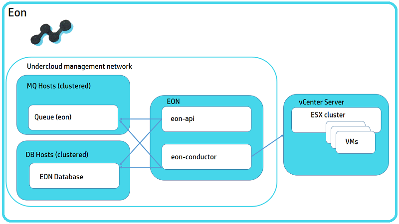

EON Architecture

HP Helion OpenStack® EON Service Overview
ESX integration in HP Helion OpenStack enables administrators to connect their cloud to an existing VMware vCenter installation. The VMware vCenter driver connects to ESXi clusters in a vCenter through Compute proxy nodes. The Nova scheduler sees the ESXi clusters as compute nodes and uses that information for scheduling a new instance.
The ESX on border (EON) service is an inventory which interacts with the VMware vCenter server and collects the information available at the datacenters and clusters. This information is used for deployment and configuration of ESX Proxy Compute nodes. The EON service is deployed in the undercloud controller node.
EON, a new service sub component, captures details of the vCenter server in a Cloud Controller and provides the details of the clusters for configuring the list of clusters managed by ESX Proxy Compute node. The ESX Proxy Compute driver communicates to VMware vCenter server through VI SDK.